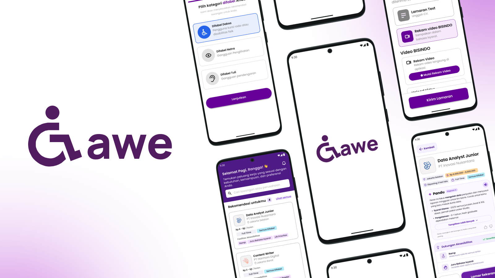

Gawe is an accessibility-first job platform designed specifically for people with disabilities. The platform helps users discover and apply for job opportunities based on their abilities, preferences, accessibility needs, and desired job type. Gawe aims to create a more inclusive job-search experience by making job information easier to understand and providing accessibility-focused features throughout the application process.
As a UI/UX Designer, I was responsible for designing an accessible and user-friendly experience for people with different types of disabilities. I contributed to translating user needs and research insights into intuitive interfaces, user flows, and accessibility-focused features.
I worked on designing the overall user journey, from onboarding and accessibility preference selection to job discovery, application, interview scheduling, and application tracking. I also considered how different users may interact with the interface based on their accessibility needs.
"My focus was not only on creating a visually consistent interface, but also on ensuring that the design could provide a clear, simple, and comfortable experience for users with visual, physical, and hearing disabilities."
Gawe was designed with an accessibility-first approach, where accessibility considerations were integrated into the core experience rather than treated as an additional feature.
The design considers different interaction needs, including screen reader compatibility, clear information hierarchy, accessible color usage, simplified navigation, and alternative ways of consuming information.
The interface also provides personalized accessibility options based on the user's needs, allowing the experience to adapt to different types of disabilities.
Users can select their disability type, accessibility needs, preferred job type, and location to create a more personalized job-search experience.
Job listings provide clear information about company details, location, job type, required skills, and available accessibility facilities.
An AI-powered assistant that helps users understand job descriptions, requirements, and compatibility with their profile through structured text or voice-based guidance.
Users can upload or record their CV directly through the platform, providing alternative ways to complete the application process.
Users can easily monitor the status of their applications and receive notifications for important updates such as interview schedules.
I contributed to developing the user flow and interface for key features within Gawe, including onboarding, job discovery, job details, application, profile, notifications, and application history.
I also worked on establishing a consistent visual system, including typography, color hierarchy, component design, and accessibility considerations. Particular attention was given to ensuring that important information and actions were easy to identify and understand.
The final design presents Gawe as more than a conventional job-search platform. By combining personalized job recommendations with accessibility-focused interactions, the platform aims to reduce barriers that people with disabilities may encounter throughout the job-search and application process.
Through this project, I learned how accessibility can influence not only visual design, but also information architecture, interaction patterns, content presentation, and the overall user experience.
The prototype showcases the complete user journey, from onboarding and personalized job discovery to application submission, interview scheduling, and application tracking.